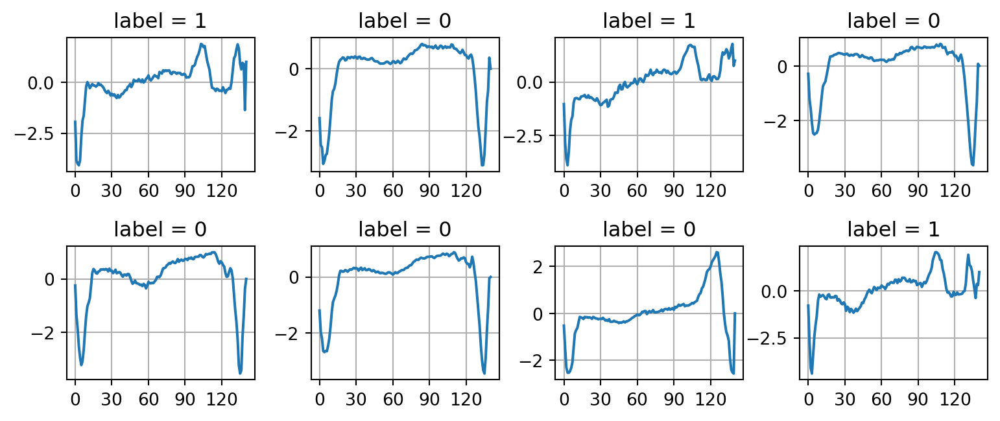
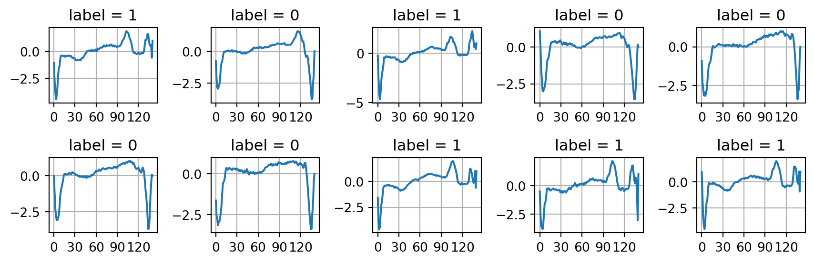
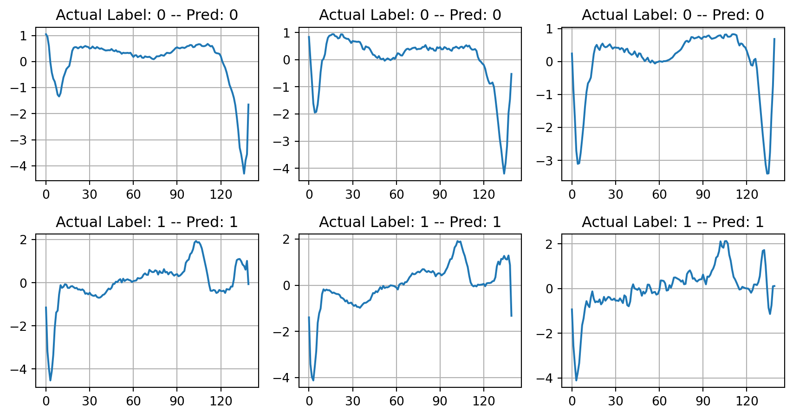
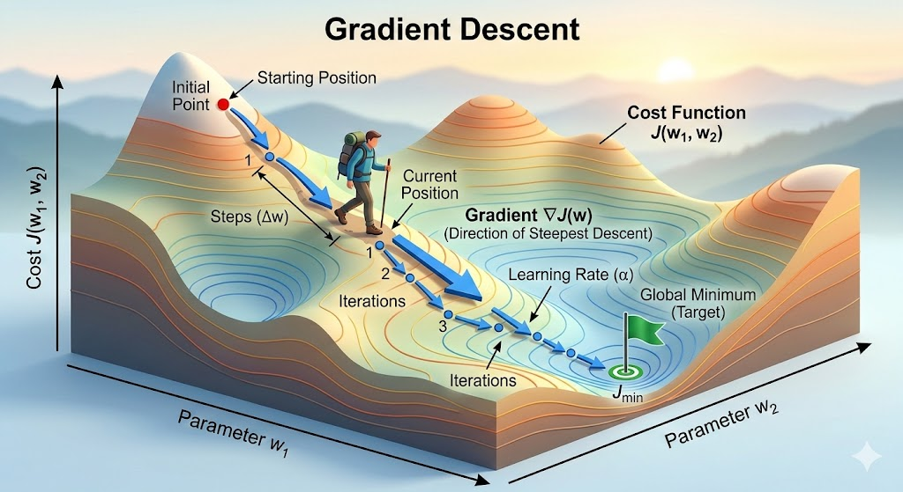

It is a shame that we have only one semester to learn so much new knowledge but we don’t have a real opportunity to really develop a meaningful and serious project.
You might feel “What the heck! The assignment is so long.” Trust me bro! The solution for this project is much much shorter than the description itself. It is also mostly based on what you have done in Assignment 01. The long description is to help you to understand the project better and deeper. A short description will leave you pretty confused.
1.1 Ultimate goal
In this assignment, we aim to build a mini-library that mimic two important machine learning frameworks in the machine learning world. In fact, they look ridiculously simple, they are one of the backbones of vast number of machine learning frameworks that have been used these days, including of course the genAI frameworks you are deploying. In the end of the assignment, we try to mimic two important classes provided in the celebrated library for machine learning: scikit-learn – Text contains hyperref. Particularly, we focus on two regression models
Linear Regression
Logistic Regression
1.2 Objectives
The two main objectives of this assignment consists of
Develop a mini-library sklearn_lite that mimic a small part of the Python library scikit-learn
Apply our built library to perform some fancy applications.
Besides these two main objectives, we take this opportunity to learn some knowledge that could be useful for you when you may choose ENG4200 and ENG5337
2 Quick tour to the world of machine learning
As mentioned above, we will develop two classes LinearRegression and LogisticRegression representing two basic regression models “Linear Regression” and “Logistic Regression”, respectively.
✎ Linear Regression. is used to make prediction on the continous spectrum of data points.
Examples
Predict the house price of a given flat given its features such as total living area, number of bedrooms, distance to the city center, distance to schools, distance to public transporation stations, \(\ldots\)
Predict the age of a person by using their recent photos.
Predict the price of a bottle of wine given its information about the wine: number of years, location, type of grapdes, \(\ldots\)
Linear regression can be easily extended to Polynomial Regression to enhance its power and widen its capability in various complex applications.
✎ Logistic Regression is used to classify data points into finite number of categories, such as \(0, 1, 2, \ldots, K\).
Examples
Given an image of one digit written by hand, predict what number it represents. The image represent \(1\) out of \(10\) digits: \(0, 1, 2, \ldots, 9\).
Given a patient’s record of ECG diagram, predict whether the patient is fine or not, i.e., just \(0\) (not sick) or \(1\) (sick).
2.1 Terminologies
Before going into the mathematics behind these two machine learning models, we need some terminologies.
✎ Supervised Learning
Both of these regression methods are classified as supervised learning methods in which we have the input data given by \(\mathbf{x}^{(i)} = (x_1^{(i)}, x_2^{(i)}, \ldots, x_n^{(i)})\) and output data given by \(y^{(i)}\) for \(i = 1, \ldots, m\), where \(m\) is the number of samples.
✎ Dataset
Assume that we are given a dataset \(\mathcal{D}\) with \(m\)samples, each sample has \(n\) input features\(\mathbf{x}^{(i)}=(x_1^{(i)}, \ldots, x_n^{(i)}) \in \mathbb{R}^{n}\) and \(m\) label \(y^{(i)}\), where \(i \in \{1, \ldots, m\}\) is an index of one sample. So the dataset \(\mathcal{D}\) can be written as follows
✎ Regression Problem versus Classification Problem
In the world of machine learning & statistics, a regression problem is a task where the goal is to predict a continuous, numerical output value based on one or more input variables (features).
In a classification problem, the goal is to predict a discrete label or category for a given input. Instead of calculating “how much” (like a price), you are determining “which one” (like a species or a status).
✎ Linear regression
In regression problem the label \(y^{(i)}\) is a real number: \(y^{(i)} \in \mathbb{R}\). An example is given in the dataset concrete.csv.
import pandas as pdconcrete_data = pd.read_csv("./data/concrete.csv")n_samples =len(concrete_data)print(f"Number of samples = {n_samples}") # the first row (headers of data) not countedconcrete_data.head()
Number of samples = 1030
cement
slag
ash
water
superplastic
coarseagg
fineagg
age
strength
0
540.0
0.0
0.0
162.0
2.5
1040.0
676.0
28
79.99
1
540.0
0.0
0.0
162.0
2.5
1055.0
676.0
28
61.89
2
332.5
142.5
0.0
228.0
0.0
932.0
594.0
270
40.27
3
332.5
142.5
0.0
228.0
0.0
932.0
594.0
365
41.05
4
198.6
132.4
0.0
192.0
0.0
978.4
825.5
360
44.30
In this dataset, we use \(8\) input features are used to make prediction, that is \(\mathbf{x}^{(i)} \in \mathbb{R}^{8}\). The label \(y^{(i)}\) is a scalar (real) number, i.e. \(y^{(i)} \in \mathbb{R}\).
➥ Note Do not confuse “regression problem” with “linear regression” model. Linear regression is a mathematical model, while regression problem refers to a class of problems of predicting contiuous outputs.
✎ Logistic regression
In classification problem the label \(y^{(i)}\) is an integral number (integer type) and it takes only finite number of values. If the problem involves classification of samples into \(K\) categories, the value of \(y^{(i)}\) can take only \(K\) possibilities: \(y^{(i)}\in \{0, \ldots K - 1\}\). Apparently, it does not matter how you set the value for \(y^{(i)}\) as long as there are only \(K\) possible values. However, it is conventional to start from \(0\) and then increase by \(1\). The mathematics stay the same; just formality of how you name things. An example is given in the dataset ecg.csv
import numpy as npdata = np.loadtxt('./data/ecg.csv', delimiter=',')X = data[:,:-1] # take all the rows, all the column from the first to the second lasty = data[:,-1] # take all the rows, the last columnn_features = X.shape[1]n_classes =len(np.unique(y))print(f"n_features = {n_features}")print(f"n_classes = {n_classes}")
n_features = 140
n_classes = 2
As this is the ECG diagram, let us draw them and show the label as on the figure title as well.
import matplotlib.pyplot as pltnrows, ncols =2, 4plt.figure(figsize=(8, 3.5))np.random.seed(seed=42) # just for reproducibility purposefor i inrange(nrows * ncols): plt.subplot(nrows, ncols, i+1) idx = np.random.randint(low=0, high=X.shape[0]) plt.plot(data[idx]) plt.title(f"label = {int(y[idx])}") plt.xticks(np.linspace(0, 120, 5)) plt.grid(True)plt.tight_layout()

3 Deploying LinearRegression and LogisticRegression
Before we discuss the mathematics behind Linear Regression and Logistic Regression, let us examine two examples given in the two above-mentioned files concrete.csv and ecg.csv. We first write a Python program to make prediction of concrete strength and then another program to make prediction whether a patient is fine or not given their ECG data.
3.1 Linear regression using LinearRegression
We shall study two applications of LinearRegression
Predict the concrete strength using \(8\) features of technical info of the concrete.
Build a simple polynomial prediction model.
Predict the strength of concrete
First, we need to load data using the library Pandas and then convert the data into ndarray.
import pandas as pdimport numpy as npconcrete_data = pd.read_csv("./data/concrete.csv") # concrete_data is a DataFrame objectconcrete_data = concrete_data.to_numpy() # now, it is a ndarray objectprint(concrete_data)
You will learn soon that we need to test whether our prediction model is good or not. However, all the data we have are only avaliable in the csv file. For this reason, machine learning practioners normally split the dataset into two sets: training set and test set. The training set is used to train the machine learning model, which means seeking the model parameters \(\mathbf{w}\) and \(b\) explained in Assignment 1. In our project, we don’t have to training-test split when we build the library. I just want to explain the point.
from sklearn.model_selection import train_test_splitfrom sklearn.linear_model import LinearRegressionfrom sklearn.metrics import r2_scoreX_train, X_test, y_train, y_test = train_test_split(X, y, test_size=0.20, random_state=42)
Training the model by using scikit-learn is ridiculously easy as all the power-lifting has been done by the library.
model = LinearRegression() # define a LinearRegression modelmodel.fit(X_train, y_train) # training happens here -- look for model parameters w, b
LinearRegression()
In a Jupyter environment, please rerun this cell to show the HTML representation or trust the notebook. On GitHub, the HTML representation is unable to render, please try loading this page with nbviewer.org.
Parameters
fit_intercept
True
copy_X
True
tol
1e-06
n_jobs
None
positive
False
As explained above, we measure how good our prediction model is by compute \(R^2\) (read R-squared) score on both the training set and the test set. The \(R^2\) score being close to \(1\) means the model predicts extremely well, the score being close to \(0\) means the model predicts extremely bad. Note that \(R^2\) score can be negative – The square term may be misleading you to think that it must be a non-negative number.
According to these \(R^2\)-score, the model has done a pretty good job in predicting the concrete strength given \(8\) input features.
Build a polynomial regression model
In this example, we generate a dataset with one single feature by adding noise to data points created on the graph of a cubic function \[
p(x) = x (x - 1)(x + 1) = x^3 - x
\]
As we can see, at this point we have the dataset \[
\mathcal{D} = \Big\{(x^{(1)}, y^{(1)}), \ldots, (x^{(m)}, y^{(m)}) \Big\}
\] with \(x^{(i)} \in \mathbb{R}\). Apparently, if we try to fit a line to this dataset, the fitting line has no chance to really fit the data well. One cannot “fit” a straight line to a curve. To build a model that fits this kind of data, we apparently that the following function will do a pretty good job \[
f_{\mathbf{w}, b}(\mathbf{x}) = w_1 x + w_2 x^2 + w_3 x^3 + b = \mathbf{w}\cdot \mathbf{x} + b,
\tag{2}\] where \[
\mathbf{w} = (w_1, w_2, w_3), \quad \mathbf{x} = (x, x^2, x^3).
\] You should see immediately from Equation 2 that “Wait a minute”, that’s exactly a linear regression model with \(3\) features, each feature \(x_j\) is formed by taking the original feature \(x\) to power \(j\). That is, we have \(x_1 = x^{1}, x_2 = x^{2}, x_{3} = x^3\).
It is very easy to form these features in NumPy. Fortunately, scikit-learn gives us a tool to do this too. In the following code, the feature \(x^{0} = 1\) is also added to the matrix X_poly.
from sklearn.preprocessing import PolynomialFeaturespoly_features = PolynomialFeatures(degree=3)X_data = x_data.reshape((-1, 1))X_poly = poly_features.fit_transform(X_data)print(f"X_poly =\n{X_poly[:4]}") # print the first 4 samplesprint(f"X_poly.shape = {X_poly.shape}")
The synthetical dataset is ready. We can now proceed to build the linear regression as in the last application.
from sklearn.linear_model import LinearRegressionmodel = LinearRegression()model.fit(X_poly, y_data)
LinearRegression()
In a Jupyter environment, please rerun this cell to show the HTML representation or trust the notebook. On GitHub, the HTML representation is unable to render, please try loading this page with nbviewer.org.
Parameters
fit_intercept
True
copy_X
True
tol
1e-06
n_jobs
None
positive
False
If you think about this whole process “long enough”, you will see that the linear regression model we have just built is nothing but just a function of multiple variable. That is, given a vector \(\mathbf{x} = (x_1, x_2, x_3)\) this model gives me the value \(\widehat{y} = f_\mathbf{w}, b(\mathbf{x})\). That’s it. Therefore, to justify the prediction power of this model, let us try to visualize it. Hopefully, it should agree well with the original polynomial \(p(x) = x(x-1)(x+1)\). However, as just explained, this model is a function of three variables. To visualize it, we must provide the input the inform \((x, x^{2}, x^{3})\). This is exactly what we will achieve in the following code.
Here we go. The polynomial regression model closely fits the true (hidden) manifold that is used to generate the synthetic and random data.
3.2 Logistic regression using LogisticRegression
As before, we need to load the csv file into an ndarray to prepare the data for training the logistic regression model.
data = pd.read_csv("./data/ecg.csv")data = data.to_numpy()# Plot some of the data for better understandingnrows, ncols =2, 5plt.figure(figsize=(9, 3.0))np.random.seed(seed=42) # just for reproducibility purposefor i inrange(nrows * ncols): plt.subplot(nrows, ncols, i+1) idx = np.random.randint(low=0, high=X.shape[0]) plt.plot(data[idx]) plt.title(f"label = {int(y[idx])}") plt.xticks(np.linspace(0, 120, 5)) plt.grid(True)plt.tight_layout()

Next, we split the original dataset into two sets: training set and test set. We can use any splitting proportion we want. Here, we split \(80\% - 20\%\) as above.
X_train, X_test, y_train, y_test = train_test_split(X, y, test_size=0.20, random_state=42)
Now, we define a LogisticRegression model object and perform the training
from sklearn.linear_model import LogisticRegressionlog_reg = LogisticRegression()log_reg.fit(X_train, y_train)
LogisticRegression()
In a Jupyter environment, please rerun this cell to show the HTML representation or trust the notebook. On GitHub, the HTML representation is unable to render, please try loading this page with nbviewer.org.
Parameters
penalty
'l2'
dual
False
tol
0.0001
C
1.0
fit_intercept
True
intercept_scaling
1
class_weight
None
random_state
None
solver
'lbfgs'
max_iter
100
multi_class
'deprecated'
verbose
0
warm_start
False
n_jobs
None
l1_ratio
None
Unlike regression problems in which we can measure how well the model is by using \(R^2\) score, we cannot use this score to measure how well the model performs on classification problem. Instead, we use the accuracy_score to measure how accurate the model can classify the samples into the right category. In our case, we measure how well the model can predict the samples in the test set. The score is just simply the number of correct predictions divided by the total number of predictions made.
The model can make prediction fantastically, almost \(99\%\) correctly. Now, we plot some data in the test set and show both the prediction as well as the ground truth label (the labels that are given by the data).
nrows, ncols =2, 3plt.figure(figsize=(9, 4.8))np.random.seed(seed=42) # just for reproducibility purposefor i inrange(nrows * ncols): plt.subplot(nrows, ncols, i+1) idx = np.random.randint(low=0, high=X_test.shape[0]) actual_label =int(y_test[idx])# convert this to a row vector which is a (1 x n) matrix. data_point = X_test[idx].reshape(1, -1) predicted_label =int(log_reg.predict(data_point)[0]) plt.plot(X_test[idx]) plt.title(f"Actual Label: {actual_label} -- Pred: {predicted_label}") plt.xticks(np.linspace(0, 120, 5)) plt.grid(True)plt.tight_layout()

4 Mathematics behind the scene
Since we want to implement these models in C++ from scratch, we need to understand the mathematics behind the scene. This is the topic of this Section. Note that you have learned the maths behind LinearRegression in the Assignment 01. We shall revisit it and proceed to logistic regression.
You will quickly recognize that although the mathematical formulation behind the logistic regression model is slightly different from that of linear regression model, the gradient descent iteration algorithm shares exactly the same formulation. For this reason, a large portion of what you have done for linear regression can easily carried over to logistic regression.
4.1 Building and training a machine learning model
You have heard a lot about the Machine Learning and all the hype about it. In my view1, building and training a machine learning model needs \(3\) key components:
Build or define a model
This step involves how we define a mapping from one space to another space. This mapping depends on a set of parameters which is called learnable parameters or model parameters.
Define how we measure the model
To train the model or to learn the right parameters, we need a way to measure how well the model performs in relative with the given dataset. In this step, we define a loss function which measures how well the model make predictions. We define the loss function so that it serves the following intuiition. The smaller the loss function is, the better the model can make good predictions. The larger the loss function is, the worse the model can make good predictions.
Train the model
To train a model is to look for the model parameters so that the loss function becomes smaller and smaller, leading to a minimization problem. To solve this minimization problem, we need a gradient-based method and there are many such gradient-based methods.
4.2 Gradient descent method
Imagine that the graph of a loss function \[
\mathcal{L} = \mathcal{L}(\Theta) = \mathcal{L}(\theta_1, \ldots, \theta_n),\quad \Theta \in \mathbb{R}^{n}
\] can be visualized as a valley and the minimum occurs at the bottom of the valley. Starting from a particular position on the valley, we try to walk all the way down to the bottom. At one single position, we want to make a step so that we can actually walk down. Mathematically, one can prove that the gradient of the loss function \(\nabla \mathcal{L}\) is the direction we can walk down the fastest.2 For this reason, the gradient descent method was invented to minimize the loss function \(\mathcal{L} = \mathcal{L}(\Theta)\).

Illustration of the gradient descent method
Now, we want to minimize the loss function \(\mathcal{L} = \mathcal{L}(\Theta)\) following the intuition presented in the above illustration figure. Assume that we start initially at the position \(\Theta^{[0]}\). The aim is to compute \(\Theta^{[1]}\) so that the loss function at \(\Theta^{[1]}\) is smaller than the loss function evaluated at \(\Theta^{[0]}\). This can be done by using the following update formula: \[
\Theta^{[1]} := \Theta^{[0]} - \alpha \nabla \mathcal{L}(\Theta^{[0]}),
\] where \(\nabla\mathcal{L}(\Theta^{[0]}) \in \mathbb{R}^{n}\) is the gradient of the loss function \(\mathcal{L}\) evaluated at \(\Theta^{[0]}\) and \(\alpha \in \mathbb{R}\) is the learning rate (just a scalar) dictating how far we step in the direction \(\nabla \mathcal{L}(\Theta^{[0]})\).
It turns out that the next step to walk as a human in the figure follows exactly the same strategy. Therefore, it leads to the iteration process \[
\Theta^{[t+1]} := \Theta^{[t]} - \alpha \nabla \mathcal{L}(\Theta^{[t]}),\quad \forall t= 0, 1, 2, \ldots
\tag{3}\]Equation 3 is written in the vector form and can be rewritten in the unpacked form as follows \[
\begin{aligned}
\theta_{1}^{[t+1]} &:= \theta_{1}^{[t]} - \alpha \frac{\partial \mathcal{L}}{\partial \theta_{1}}(\theta_1^{[t]}, \ldots, \theta_{2}^{[t]}), \\[3pt]
\theta_{2}^{[t+1]} &:= \theta_{2}^{[t]} - \alpha \frac{\partial \mathcal{L}}{\partial \theta_{1}}(\theta_1^{[t]}, \ldots, \theta_{2}^{[t]}), \\[3pt]
& \text{etc.} \\[3pt]
\theta_{n}^{[t+1]} &:= \theta_{n}^{[t]} - \alpha \frac{\partial \mathcal{L}}{\partial \theta_{1}}(\theta_1^{[t]}, \ldots, \theta_{n}^{[t]}). \\[3pt]
\end{aligned}
\]
This is the key algorithm we need to implement for our project assignment.
4.3 Linear Regression with multiple features
Problem description
We are given a dataset \(\mathcal{D}\) with \(m\) samples and each sample has \(n\) input features \(\mathbf{x}^{(i)} = (x_1^{(i)}, \ldots, x_n^{(i)}) \in \mathbb{R}^{n}\) and one output label \(y \in \mathbb{R}^{n}\) – see Equation 1 again \[
\mathcal{D} = \Big\{ (\mathbf{x}^{(1)}, y^{(1)}), (\mathbf{x}^{(2)}, y^{(2)}), \ldots, (\mathbf{x}^{(m)}, y^{(m)}) \Big\}
\]
This dataset can be written in two matrices \[
\mathbf{X} = \begin{bmatrix}
x_1^{(1)} & x_{2}^{(1)} & \ldots & x_{n}^{(1)} \\[3pt]
x_1^{(2)} & x_{2}^{(2)} & \ldots & x_{n}^{(2)} \\[3pt]
\vdots & \vdots & \ddots & \vdots & \\[3pt]
x_1^{(m)} & x_{2}^{(m)} & \ldots & x_{n}^{(m)}
\end{bmatrix}, \qquad
\mathbf{y} = \begin{bmatrix} y_{\phantom{1}}^{(1)} \\[3pt]
y_{\phantom{1}}^{(2)} \\[3pt]
\vdots \\[3pt]
y_{\phantom{1}}^{(m)}
\end{bmatrix}
\] Our task is to build a model, which is actually just a function or a mapping, to predict a new output \(\widehat{y}\) given a new sample (data point) \(\mathbf{x}\). That is we need to construct the function \(f = f(\mathbf{x})\) so that it fits the data very well. If the model can be visualized, we expect the graph \(y = f(\mathbf{x})\) should fit the data points in the high-dimensional space \(\mathbf{R}^{n + 1}\) very well. Now, we go through three steps mentioned in Section 4.1.
Linear regression model
The linear regression model is defined by a simple linear relationship between input \(\mathbf{x}\) and output \(y\): \[
\widehat{y} = f_{\mathbb{w}, b}(\mathbf{x})= \mathbf{w}\cdot \mathbf{x} + b.
\] The parameters \(\mathbf{w} = (w_1, \ldots, w_n)\) are called weights and the parameter \(b\) is called bias. This linear regression model is fully determined by the learnable parameters\(\mathbf{w}=(w_1, \ldots, w_n)\) and \(b\). Our objective is to seek these learnable parameters\(w_1, \ldots, w_n\) and \(b\).
Loss function
To measure how well the model is, we use the Mean Square Error (MSE) loss function: \[
\begin{aligned}
\mathcal{L}(\mathbf{w}, b) &= \frac{1}{m} \sum\limits_{i=1}^{m}(\widehat{y} \big(\mathbf{x}^{(i)}) - y^{(i)} \big)^2 = \frac{1}{m} \sum\limits_{i=1}^{m} \big(f_{\mathbf{w},b}(\mathbf{x}^{(i)}) - y^{(i)} \big)^2 \\
&= \frac{1}{m} \sum\limits_{i=1}^{m} \big(\mathbf{w}\cdot \mathbf{x}^{(i)} + b - y^{(i)} \big)^2
\end{aligned}
\tag{4}\]
Note that we don’t use \(2m\) in the denominator as in the Assignment 01. This is just to prove that the minimium point is exactly the same, only the minimum value is scaled by a factor \(1/2\). For this reason, the gradient \(\nabla \mathcal{L}\) will be also scaled (see below).
It is immediately clear that the loss function \(\mathcal{L}\) defined as above is just a function of \(\mathbf{w}\) and \(b\) because the values \(\mathbf{x}^{(i)}\) and \(y^{(i)}\) for all \(i = 1, \ldots, m\) are given in the dataset \(\mathcal{D}\) (e.g., in the .csv file)
4.4 Train the model
We recall here “training the model” means “looking for \(\mathbf{w}\) and \(b\)” and the way to do this is to implement the gradient descent method given by the iteration formula Equation 3. In the current case, the variable \(\Theta\) corresponds to the model parameters \(\mathbf{w}\) and \(b\). To implement the update rule given by Equation 3, we need to compute the gradient \(\nabla\mathcal{L}\) which refers to derivatives of \(\mathcal{L}\) with respect to \(w_1, w_2, \ldots, w_n\) and to \(b\).
The gradient of \(\mathcal{L}\) given by Equation 4 is computed as follows3\[
\begin{aligned}
\frac{\partial \mathcal{L}}{\partial w_1} &= \frac{2}{m} \sum\limits_{i=1}^{m} \big(\widehat{y}(\mathbf{x}^{(i)}) - y^{(i)} \big) x_{1}^{(i)} \\[3pt]
& \text{so on} \\[3pt]
\frac{\partial \mathcal{L}}{\partial w_n} &= \frac{2}{m} \sum\limits_{i=1}^{m} \big(\widehat{y}(\mathbf{x}^{(i)}) - y^{(i)} \big) x_{n}^{(i)} \\[3pt]
\frac{\partial \mathcal{L}}{\partial b} &= \frac{2}{m} \sum\limits_{i=1}^{m} \big(\widehat{y}(\mathbf{x}^{(i)}) - y^{(i)} \big) \cdot 1 \\[3pt]
\end{aligned}
\] Note that since we have \(m\) instead of \(2m\) in the denominator of Equation 4, the gradient is also scaled, and thus we see number \(2\) in the nominator of \(\frac{2}{m}\) as compared to \(\frac{1}{m}\) in the AAignment 01. By plugging these equations in Equation 3, we obtain the following update rule \[
\begin{aligned}
w_1^{[t+1]} &:= w_{1}^{[t]} - \frac{2}{m} \sum\limits_{i=1}^{m} \big[\big(\mathbf{w}^{[t]} \cdot \mathbf{x}^{(i)} + b^{[t]}\big) - y^{(i)} \big] x_{1}^{(i)} \\[3pt]
& \text{so on} \\[3pt]
w_n^{[t+1]} &:= w_{n}^{[t]} - \frac{2}{m} \sum\limits_{i=1}^{m} \big[\big(\mathbf{w}^{[t]} \cdot \mathbf{x}^{(i)} + b^{[t]}\big) - y^{(i)} \big] x_{n}^{(i)} \\[3pt]
b^{[t+1]} &:= b^{[t]} - \frac{2}{m} \sum\limits_{i=1}^{m} \big[\big(\mathbf{w}^{[t]} \cdot \mathbf{x}^{(i)} + b^{[t]}\big) - y^{(i)} \big] \cdot 1\\[3pt]
\end{aligned}
\]
5 Task
You need to design a header-only library that is implemented in an Object-oriented Programming fashion so that it mimics the scikit-learn library in Python. Particularly, the following are the must-do:
5.1 Basic tasks
Decide your own OOP design to implement the library and program in general. The design involves how you want to organize classes, inheritence, choices of data types and data storage. Note that a functioning program is not necessary a well-designed programe. You need to make your own decision! Try to function as a software engineer 😏😏!!!
Build two classes LinearRegression and LogisticRegression that mimic their counterparts in Python. These classes must have two important member functions fit() and predict() with appropriate function parameters.
Decide on how you want to read the .csv file. Using either functions or object-oriented programming is fine. Make sure you give convincing reasons for your choice in the report.
Add these two classes into the namespace linear_model. This linear_model is again a namespace inside a bigger namespace sklearn_cpp. This step is to mimic the important statement in Python
::: {#377c48c6 .cell execution_count=18} {.python .cell-code} from sklearn.linear_model import LinearRegression from sklearn.linear_model import LogisticRegression :::
As you can see, the linear_model is a submodule of the module sklearn.
Write a main program to apply these two classes to solve two problems:
Predict concrete strength using linear regression – just like example in Python
Predict whether a patient is fine or not given an ECG data – just like example in Python
5.2 Build the header-only library
Based on the code you have achieved in Section 5.1, build [header-only] library by following my provided example. This is a fantastic [header-only] library that you can look at: xtensor. All the header files can be found at header file source code.
Write a main program that use the [header-only] library you have just built to test whether the library works.
6 Marking scheme
Basic tasks: 70/100
Good OOP program design: 15/100
Build two classes and test them correctly: 40/100
Main program to apply the two built classes to two applications: 15/100
Build the header-only library: 10/100
Report: 20/100
Footnotes
I have taught “Intro to Machine Learning (ML) & Artificial Intelligence (AI) 4” (ENG4200) and “Advanced ML and AI 5” (ENG5337) in the last three academic years↩︎
If you are interested in how this is proved, please feel free to ask me.↩︎
You can try to carry out the derivation. It is surprisingly easy to be honest. Clever students like you will definitely do this 😏😏↩︎